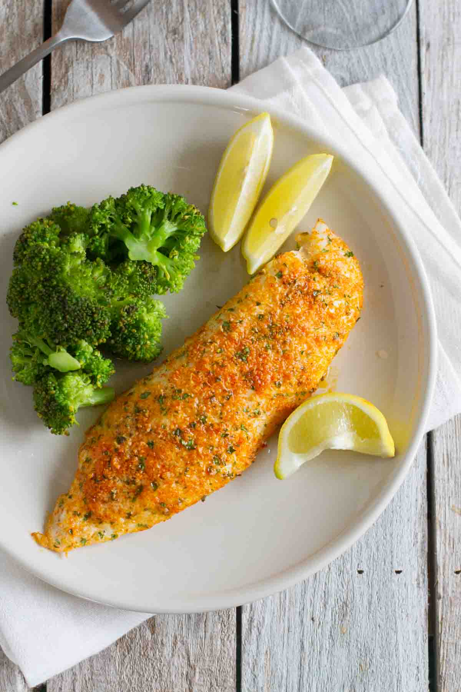

Parmesan Crusted Tilapia Fillets

Description
Prep Time:
10 mins
Cook Time:
10 mins
Total Time:
20 mins
Servings:
4
Ingredients
- ¾ cup grated Parmesan cheese
- 1 tablespoon chopped fresh parsley
- 2 teaspoons paprika
- salt and ground black pepper to taste
- 4 tilapia fillets
- 1 drizzle olive oil
Steps
- Preheat the oven to 400 degrees F (200 degrees C). Line a baking sheet with aluminum foil.
- Whisk Parmesan cheese, parsley, paprika, salt, and pepper together in a shallow dish.
- Coat tilapia fillets with olive oil and press into the Parmesan cheese mixture. Arrange coated fillets on the prepared baking sheet.
- Bake in the preheated oven until the fish flakes easily with a fork, 10 to 12 minutes.